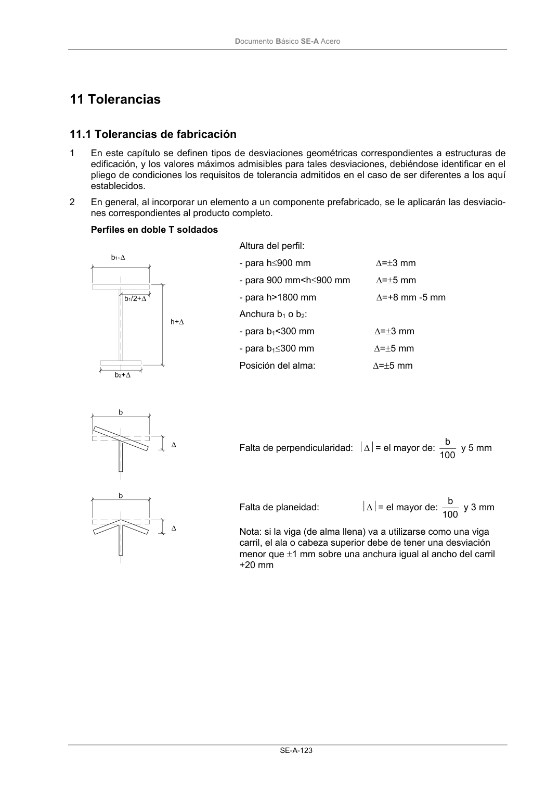
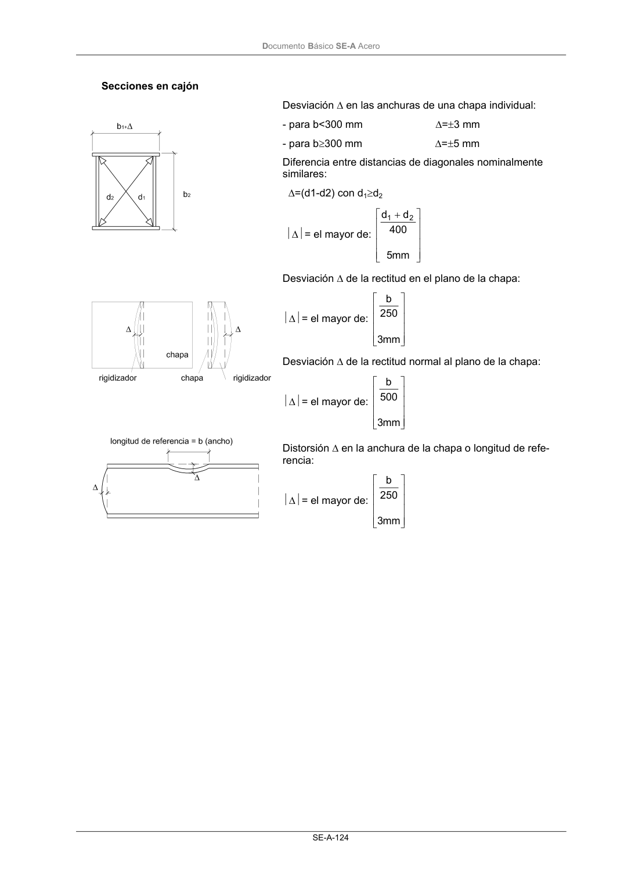
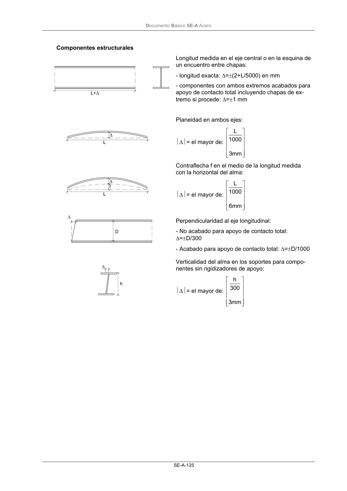
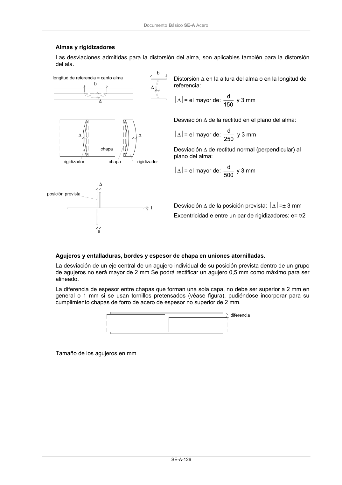
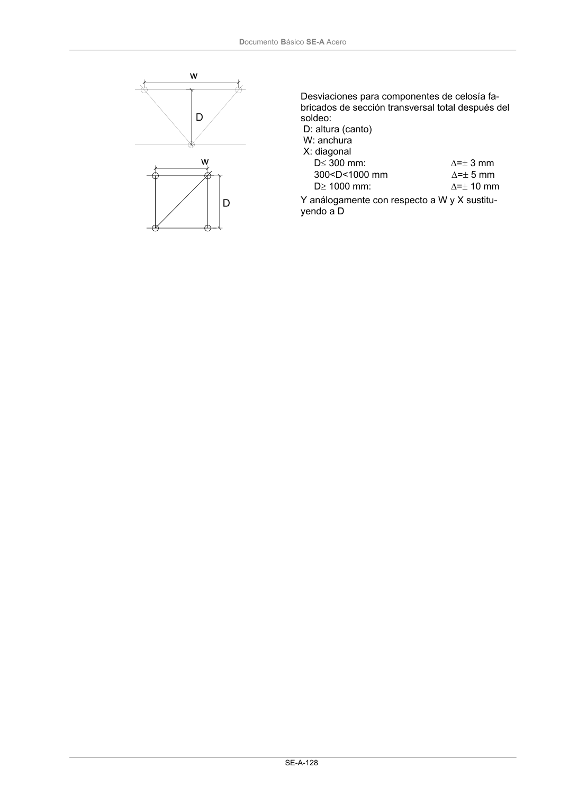
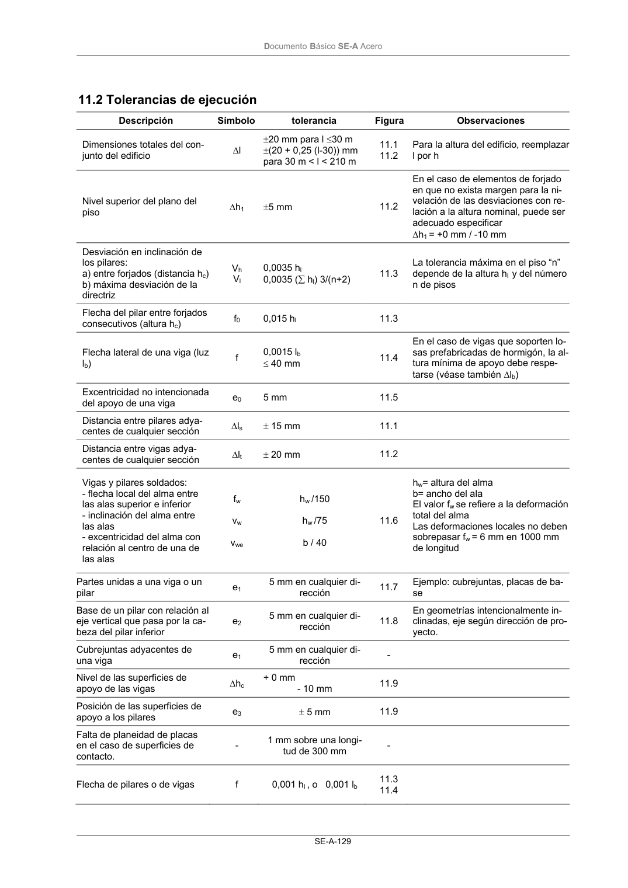

DB-SE-A Acero · edición 2007-10-23 · capa oficial
Documento DB-SE-A-oficial · SHA-256 del PDF 9ed9ea694aabfbda3bfbbef40dfe9223fde05d13c35bc2ba9751e5a96a22a64f
Copia fiel del PDF fuente · Fuente oficial
Ficha de la disposición en la fuente oficial
Formatos: JSON del segmento · Markdown
11 Tolerancias 11.1 Tolerancias de fabricación 11.1 Tolerancias de fabricación 1 En este capítulo se definen tipos de desviaciones geométricas correspondientes a estructuras de edificación, y los valores máximos admisibles para tales desviaciones, debiéndose identificar en el pliego de condiciones los requisitos de tolerancia admitidos en el caso de ser diferentes a los aquí establecidos. 2 En general, al incorporar un elemento a un componente prefabricado, se le aplicarán las desviacio- nes correspondientes al producto completo. Perfiles en doble T soldados Altura del perfil: - para h≤900 mm ∆=±3 mm - para 900 mm<h≤900 mm ∆=±5 mm - para h>1800 mm ∆=+8 mm -5 mm Anchura b1 o b2: - para b1<300 mm ∆=±3 mm - para b1≤300 mm ∆=±5 mm Posición del alma: ∆=±5 mm Falta de perpendicularidad: ∆= el mayor de: 100 b y 5 mm Falta de planeidad: ∆= el mayor de: 100 b y 3 mm Nota: si la viga (de alma llena) va a utilizarse como una viga carril, el ala o cabeza superior debe de tener una desviación menor que ±1 mm sobre una anchura igual al ancho del carril +20 mm DocumentoBásico SE-A Acero SE-A-124 Secciones en cajón Desviación ∆ en las anchuras de una chapa individual: - para b<300 mm ∆=±3 mm - para b≥300 mm ∆=±5 mm Diferencia entre distancias de diagonales nominalmente similares: ∆=(d1-d2) con d1≥d2 ∆= el mayor de: + mm 5 400 d d 2 1 Desviación ∆ de la rectitud en el plano de la chapa: ∆= el mayor de: mm 3 250 b Desviación ∆ de la rectitud normal al plano de la chapa: ∆= el mayor de: mm 3 500 b Distorsión ∆ en la anchura de la chapa o longitud de refe- rencia: ∆= el mayor de: mm 3 250 b DocumentoBásico SE-A Acero SE-A-125 Componentes estructurales Longitud medida en el eje central o en la esquina de un encuentro entre chapas: - longitud exacta: ∆=±(2+L/5000) en mm - componentes con ambos extremos acabados para apoyo de contacto total incluyendo chapas de ex- tremo si procede: ∆=±1 mm Planeidad en ambos ejes: ∆= el mayor de: mm 3 1000 L Contraflecha f en el medio de la longitud medida con la horizontal del alma: ∆= el mayor de: mm 6 1000 L Perpendicularidad al eje longitudinal: - No acabado para apoyo de contacto total: ∆=±D/300 - Acabado para apoyo de contacto total: ∆=±D/1000 Verticalidad del alma en los soportes para compo- nentes sin rigidizadores de apoyo: ∆= el mayor de: mm 3 300 h DocumentoBásico SE-A Acero SE-A-126 Almas y rigidizadores Las desviaciones admitidas para la distorsión del alma, son aplicables también para la distorsión del ala. Distorsión ∆ en la altura del alma o en la longitud de referencia: ∆= el mayor de: 150 d y 3 mm Desviación ∆ de la rectitud en el plano del alma: ∆= el mayor de: 250 d y 3 mm Desviación ∆ de rectitud normal (perpendicular) al plano del alma: ∆= el mayor de: 500 d y 3 mm Desviación ∆ de la posición prevista: ∆=± 3 mm Excentricidad e entre un par de rigidizadores: e= t/2 Agujeros y entalladuras, bordes y espesor de chapa en uniones atornilladas. La desviación de un eje central de un agujero individual de su posición prevista dentro de un grupo de agujeros no será mayor de 2 mm Se podrá rectificar un agujero 0,5 mm como máximo para ser alineado. La diferencia de espesor entre chapas que forman una sola capa, no debe ser superior a 2 mm en general o 1 mm si se usan tornillos pretensados (véase figura), pudiéndose incorporar para su cumplimiento chapas de forro de acero de espesor no superior de 2 mm. Tamaño de los agujeros en mm DocumentoBásico SE-A Acero SE-A-127 Tabla 11.1 Tamaño nominal de agujeros Tipo de agujero M12 M14 M16 a M22 M24 M27 y mayor Redondo normal y en ranura (en anchura) 1 1 2 2 3 Redondo sobredimensionado 3 4 4 6 8 En ranura cortos (en sentido longitudinal de la pieza) 4 4 6 8 10 La longitud nominal de los agujeros en ranura no debe ser superior a 2,5 veces el diámetro nominal del tornillo Desviación ∆ de un grupo de agujeros de su po- sición prevista: - dimensión a: ∆=± 5 mm - dimensión b: ∆=± 2 mm - dimensión c: ∆=± 5 mm - dimensión d: cuando h≤1000 mm ∆=± 5 mm cuando h>1000 mm ∆=± 4 mm Desviación ∆ de las dimensiones principales de la entalladura: - dimensión d: ∆=± 2 mm-0 mm - dimensión l: ∆=± 2 mm-0 mm Desviación ∆ de un borde cortado de la forma a 90º: ∆=+0,1 t Empalmes y placas de asiento de pilares. La excentricidad no intencionada de un pilar en un empalme o en una placa de asiento no superará el valor de 5 mm. Las desviaciones admitidas para las placas de asiento se aplicarán también a las placas de capitel. Componentes de celosías Las desviaciones de los componentes de celosía fabricados no deben exceder los valores que se dan en la figura Desviaciones para la excentricidad de nudo en componentes de celosía fabricados: - dimensión del rectángulo(panel) p: ∆ = ± 5 mm - dimensión acumulada ∑p: ∆ = ± 10 mm - rectitud del arriostramiento: ∆= el mayor de: mm 6 500 L Desviaciones para la excentricidad de nudo en componentes de celosía fabricados: - excentricidad en el nudo: ∆*=B/20+ 5 mm - B es la dimensión característica de la sección transversal de arriostramiento. DocumentoBásico SE-A Acero SE-A-128 Desviaciones para componentes de celosía fa- bricados de sección transversal total después del soldeo: D: altura (canto) W: anchura X: diagonal D≤ 300 mm: ∆=± 3 mm 300<D<1000 mm ∆=± 5 mm D≥ 1000 mm: ∆=± 10 mm Y análogamente con respecto a W y X sustitu- yendo a D DocumentoBásico SE-A Acero SE-A-129





